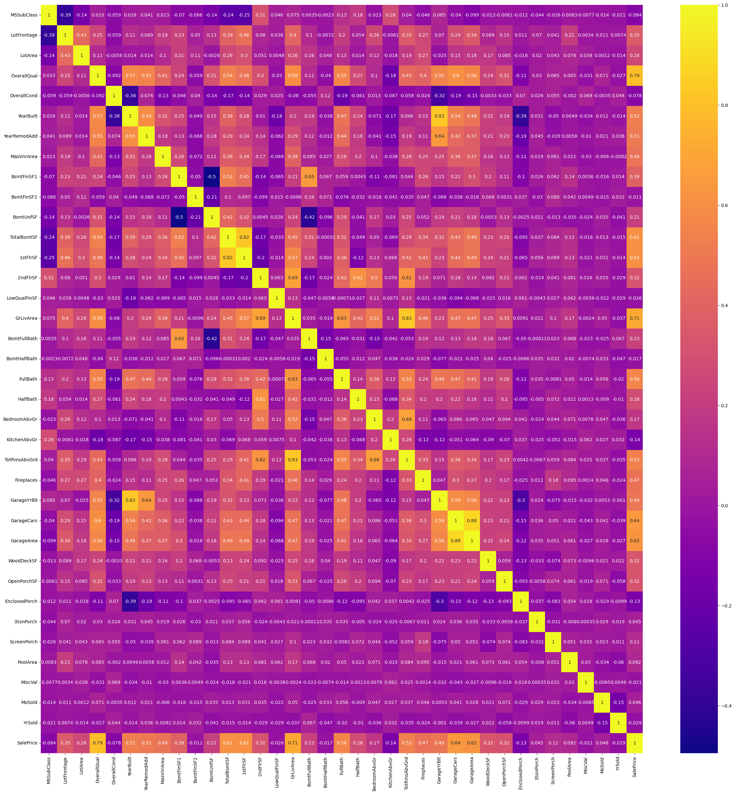
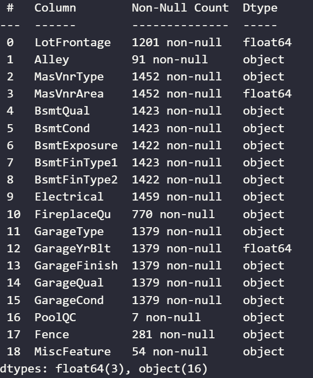
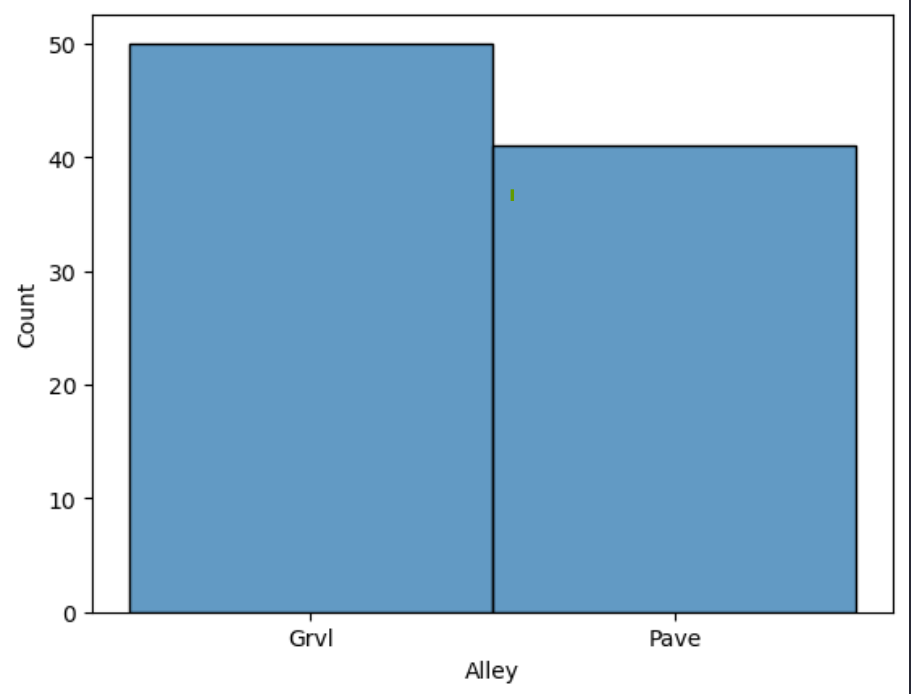
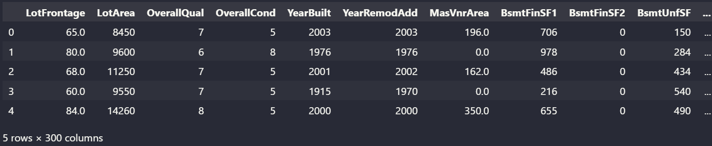
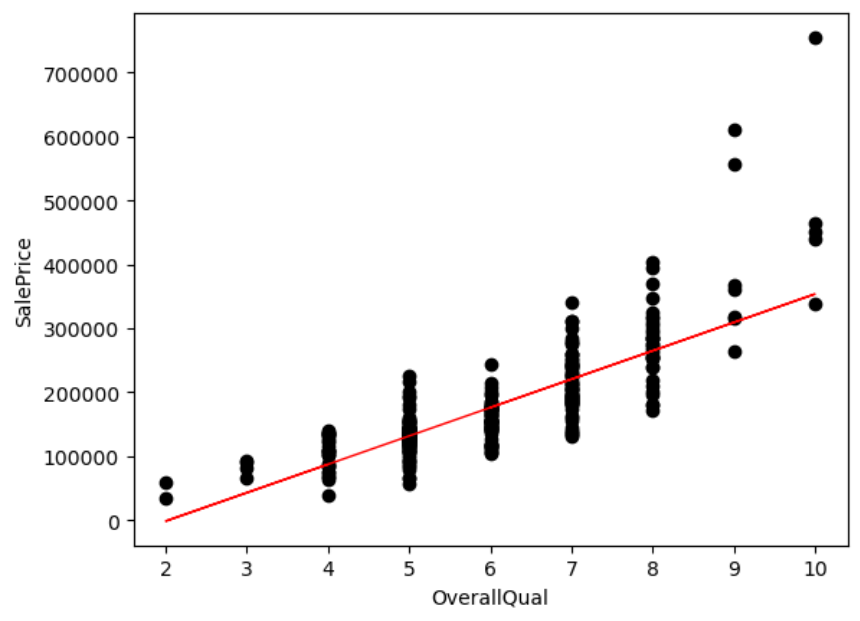

Housing Markets are constantly looked at by everyone from families trying to buy a home to real estate agents and investors. The price of a home is something people always try to predict when buying or selling a house. The potential price varies on multiple features, making it difficult to do so.
The goal of this project is to explore a dataset of housing information for houses that have sold and use regression techniques to try to create a model that can accurately predict the potential sale price of a home.
The dataset comes from the Kaggle competition titled "House Prices: Advanced Regression Techniques." The data consists of a training set of 81 features and just over 1400 data samples.
The features describe different conditions of the house, such as the area of the lot, overall quality, and number of bedrooms. Since there are 81 unique features, I will not list them all, but here are a few and their descriptions from the Kaggle Page where you can find the rest.
Regression is a machine learning technique examining the relationship between independent and dependent variables. By fitting a model to data, it can predict the expected value of a dependent variable based on a set of trained data.
This project uses two form of regression: linear regression and logistic regression. Linear regression handles linear relationships and is what most of this project uses.
Y = mx + b
Experiment 1 focuses on analyzing features, cleaning, and creating a regression model. We look at the correlations of features, the data frame values that need to be cleaned by one hot encoding and filling in null values.
To get a good understanding of the data and the dataset's features. We can look at the correlation map to get a good overview of how the features relate to each other specifically the target value, SalePrice.
Theres a lot of information in this heatmap, but for better understanding, I just wanted to list out the most essential features regarding correlation with SalePrice. which are as follows:
Some features clearly impact SalePrice more then others. Additionaly some features have high correlation with each other but not the SalePrice. This is worth noting as it might be relevent in data cleaning steps later in the project
With this we have some more understanding of whats in the dataset, and how they realate to the target
More insight to the dataset and its features were shown in the pre-processing steps below
The first step in the pre-processing process for me was to load the dataset and check to see if there were any null values, along with the overall datatypes for each feature to get a clearer understanding of the type of data we are dealing with.
From the image above we see we have mostly string based features along with numerical values mixed. This indicates both categorical values we will need to deal with and numeric values.
Additionally, we see that some columns do have null values. Taking a deeper look we see 18 columns have null values total
I ended up charting some null features to see what values existed in these null columns. This revealed that a lot of the features are categorical items that, when null, indicate that the feature is not present in the house. Take the example below for Alley.
Here we see two options Grvl and Pave, however this feature has a lot of missing values. These values are not actually null values, just show null because most houses do not have an Alley, therefore dont have a alley type.
So that answers the question regarding categorical nulls, but what about numerical null values?
Similar thought process was taken for the numerical values. Take the feature pool area for exmaple. If a house dosent have a pool then the area is 0
0 in this instance isnt a missing value, but a indicator that there is no pool
The rest of the steps for cleaning the data are now:
Additionally I noticed that the feature MSSubClass refers to classification types, according to the Kaggle Page. So before one hot encoding the categorical features, I had to convert the type to a string so it would be included as well
After one hot encoding and filling in nulls I have a cleaned dataframe that looks like this
Now that we have a clean dataset, lets get to modeling!
First I wanted to visualize some of the features against our target to see what model might fit best
From these graphs it appears that a linear model will work well.
For experiment 1 I wanted to focus on the realtionship of the highest correlated item OverallQual.
I split the dataset into a 20:80 test train ratio and fit to a linear model as seen in the code snippit below
X = df_cleaned[['OverallQual']]
y = df_cleaned['SalePrice']
X_train, X_test, y_train, y_test = train_test_split(X, y, test_size=.2, random_state=42)
lr = linear_model.LinearRegression()
lr.fit(X_train, y_train)
y_pred = lr.predict(X_test)
To evaluate the models' performance, I used two metrics, MSE and RMSE. MSE and RMSE look at the distance from the point to the line, as seen in the graph below. For MSE and RMSE lower tend to be better as it indicates a better fit.
Based on the graph it looks like a linear model fits well but is a poor fitting model
Looking the the MSE and RMSE scores of 2681026163 & 51778 respectivly indicate that the model is in fact a poor fit.
For experiment two, I wanted to see if training the model with more features would result in a better fit.
So, I followed the same steps, used the same preprocessing procedures, and kept the 20:80 split for training data. Only difference is X contained all features except the target
X = df_cleaned.copy().drop(columns='SalePrice')
y = df_cleaned['SalePrice']
X_train, X_test, y_train, y_test = train_test_split(X, y, test_size=.2, random_state=42)
lr = linear_model.LinearRegression()
lr.fit(X_train, y_train)
y_pred = lr.predict(X_test)
Unexpectedly, experiment 2's model resulted in a higher MSE and RMSE. With an MSE score of 496678913 and a RMSE of 70475, indicating a worse fit.
Since more features semm to of worsen the fitting of the model, I wanted to try two more things for the last experiment.
Changing the model to a logistic model might result in a better fit. Most of the change for experiment 3 will be from recleaning the dataset.
Most of the steps are the same as before. However, after looking back at the descriptions of features on the Kaggle page, I noticed a lot of overlap, indicating potential redundancy—something I should've caught earlier.
So, in addition to the previous cleaning steps of filling in nulls and one hot encoding. I will drop a manually selected list of columns I feel are redundant. In hopes of improving the performance of the model
col_to_drop = [
'GarageYrBlt',
'YrSold',
'GarageCars',
'BedroomAbvGr',
'KitchenAbvGr',
'BsmtHalfBath',
'BsmtFullBath',
'GarageCond',
'LotFrontage',
'MoSold',
'MiscVal',
'ScreenPorch',
'GarageFinish',
'1stFlrSF',
'2ndFlrSF',
'TotRmsAbvGrd',
'OverallQual',
]
df_cleaned_ex3 = df_cleaned_copy.drop(columns=col_to_drop)
df_cleaned_ex3 = clean(df_cleaned_ex3)
X = df_cleaned_ex3.copy().drop(columns='SalePrice')
y = df_cleaned_ex3['SalePrice']
X_train, X_test, y_train, y_test = train_test_split(X, y, test_size=.2, random_state=42)
lr = linear_model.LogisticRegression(max_iter=1000)
lr.fit(X_train, y_train)
y_pred = lr.predict(X_test)
The resulting model had the MSE and RMSE of 3593589425 and MSE of 59946.
This isnt the best model for MSE and RMSE scores. It does better then experiment 2 but worse then experiment 1, however it does indicate that further data cleaning and dimension reduction could imrpove future models as well.
The potential impact of this project is that it could help individuals predict the possible price of a home. It could help individuals find a home in their price range or, when selling, help accurately predict the cost of selling a home.
Negative impacts are that real estate agents or real estate companies could take a look at the features of a home to maximize the sale price of a future property or existing properties. This could outprice people of owning a home in a market that makes it difficult to do already.
The regression project gave further insights into the data cleaning process along with how regression works both linearly and logistically.
Additionally, this project looked at housing data and showed that some features impact the prices of a house more than others. As well as some regression models perform better on specific datasets depending on the type of relationship.
If I were to go back and redo some experiments. I would focus more time on reducing features as experiment 3 showed promise in improving model performance. Additionally, I would like to explore polynomial regression further as well.
All Code, along with the Jupeter Notebook Version of this Page can be found here